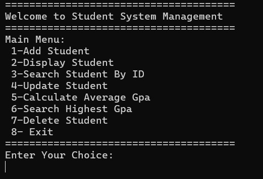
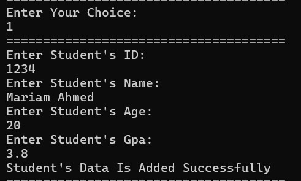
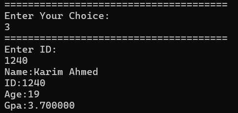
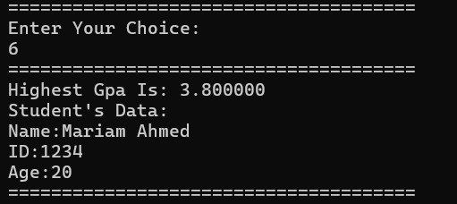

🎓 Student Management System
Overview
The Student Management System is a console-based application developed in C for managing student records efficiently using linked list data structures. The system allows users to add, update, search, display, and delete student records while providing GPA calculations and academic performance analysis.
Objectives
- Manage student records dynamically.
- Implement linked list data structures.
- Perform CRUD operations on student data.
- Calculate average GPA.
- Search and update student information.
- Apply dynamic memory allocation.
Key Features
- Add New Students.
- Display All Students.
- Search Student by ID.
- Update Student Information.
- Delete Student Records.
- Calculate Average GPA.
- Find Student with Highest GPA.
- Linked List Storage.
System Architecture
- Main Menu Interface.
- Student Structure.
- Linked List Nodes.
- Add Student Module.
- Search Module.
- Update Module.
- Delete Module.
- GPA Analysis Module.
Technologies Used
- C Programming
- Linked Lists
- Pointers
- Structures
- Dynamic Memory Allocation
- Algorithms
- Data Structures
Challenges & Solutions
-
Challenge:
Managing dynamic student records.
Solution: Implemented linked lists for flexible memory management. -
Challenge:
Efficient searching operations.
Solution: Used ID-based traversal and validation techniques. -
Challenge:
Maintaining data consistency.
Solution: Added validation checks before insertion and updates.
Results
- Successful student record management.
- Efficient linked list implementation.
- Accurate GPA calculations.
- Reliable search and update operations.
- Dynamic memory utilization.
- Fully functional console application.
Future Improvements
- File-Based Storage.
- Database Integration.
- GUI Application.
- Advanced Student Analytics.
- Course Management Features.
- Web-Based Version.
Gallery

Main Menu Interface

Adding New Student Records

Student Search & Record Retrieval

Highest GPA Student Analysis